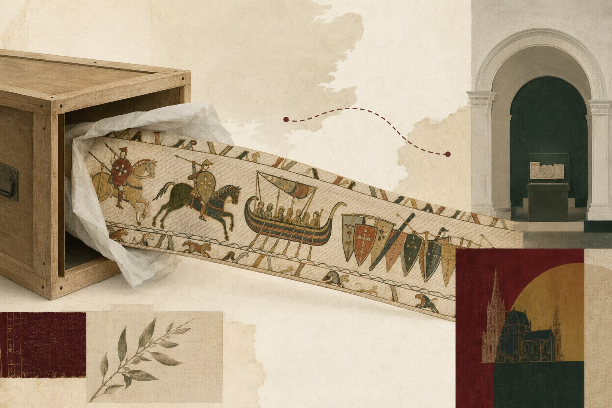

艺术人文 × 历史
贝叶挂毯跨海回到英格兰：一件“胜利者叙事”如何被搬运
近千年未回英格兰的贝叶挂毯已经抵达大英博物馆；它的运输工程，也把文物外交、保存技术与谁有权解释 1066 年重新摆到公众面前。

发生了什么
7 月 10 日凌晨，70 米长的贝叶挂毯在气候控制箱与减震支架保护下，从法国经英吉利海峡隧道抵达大英博物馆。它将在 2026 年 9 月至 2027 年 7 月展出，这是这件约作于 1072—1077 年的刺绣近千年来首次回到英格兰。作品以羊毛线绣在亚麻布上，讲述黑斯廷斯战役及诺曼征服前后的事件；大英博物馆认为它很可能由诺曼赞助人委托、英格兰刺绣者制作。
为什么重要
这不只是“名作回家”。挂毯本身是一套高度有效的政治传播：它把征服、誓言、战争和王权连成可移动的图像叙事；而今天的跨国借展，又把保存风险、外交关系和公共解释权绑在一起。运输箱、湿度控制和保险不是幕后琐事，而是决定公众能否看见历史的基础设施。更重要的是，称它为“挂毯”已成为习惯，但技术上它是刺绣——连名称都在塑造观看方式。
可创作角度
可做一期“1066 年的长卷新闻”：把贝叶挂毯当作一条 70 米的视觉报道，逐段拆解它如何选择英雄、敌人和因果，再以本次 11 小时秘密运输为第二条时间线，呈现古代宣传与现代文物治理如何在同一件物品上相遇。